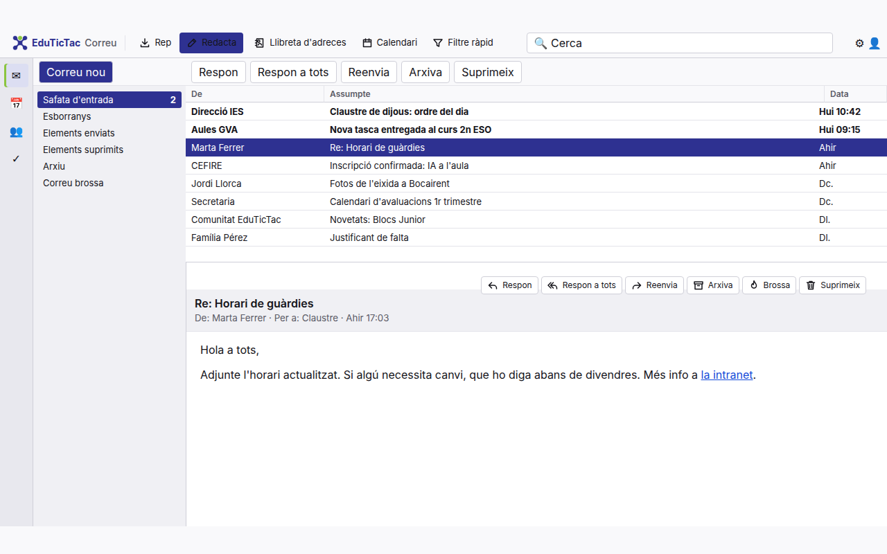
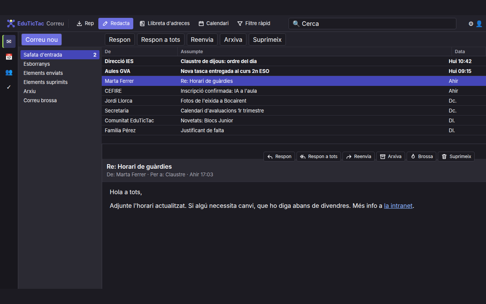

Extensió de navegador
EduTicTac Correu Clàssic
Dona a Outlook web l'aspecte d'un client de correu d'escriptori clàssic, amb menys soroll visual i les accions de sempre a la vista.
La versió de Chrome també funciona en Edge, Brave i altres navegadors basats en Chromium.
Com es veu
Tema clar i tema fosc


Què fa
Outlook, com un client de sempre
Pensada per al professorat i el personal de centres educatius que treballen amb Outlook al navegador i troben a faltar una interfície més sòbria.
- Barra d'eines unificada a dalt: Rep, Redacta, Llibreta d'adreces, Calendari i Filtre ràpid.
- Barra d'accions del missatge: Respon, Respon a tots, Reenvia, Arxiva, Brossa i Suprimeix.
- Colors sobris, files compactes i, si es vol, files alternes a la llista.
- Tema clar, fosc o automàtic (segueix el tema d'Outlook).
- Opció per amagar la cinta d'Outlook.
Privacitat
L'extensió no llegeix, no envia ni guarda el contingut del correu. Només desa les seves preferències a l'emmagatzematge del navegador. No té servidor propi ni analítica.
Projecte de la Comunitat EduTicTac, programari lliure. No està afiliada ni avalada per Microsoft; Outlook és una marca de Microsoft Corporation.